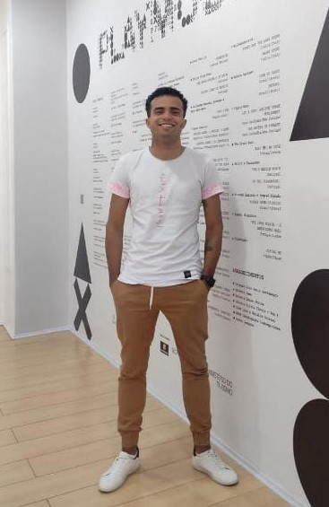

Seja Bem-vindo(a)!
Me chamo Alvaro Luiz, tenho 28 anos, sou ex-militar da Força Aérea Brasileira e atualmente estudante de TI, graduando em Análise e Desenvolvimento de Sistemas pelo Centro Universitário Augusto Motta(UNISUAM) e aluno do Programadores Carioca 2022. Sou natural e residente da cidade do Rio de Janeiro no bairro de Pilares na zona norte carioca.